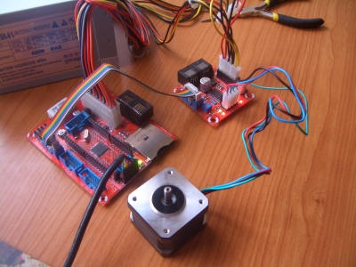
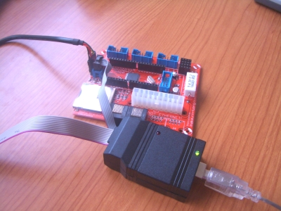
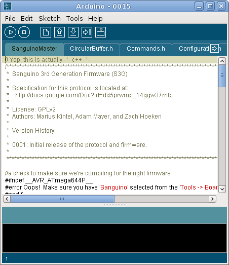
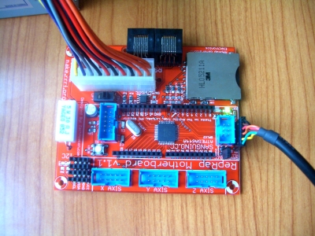
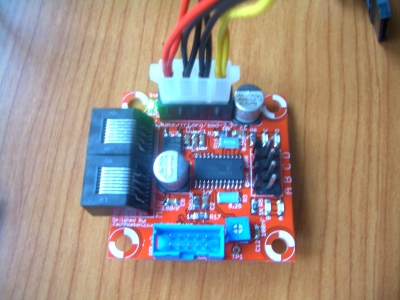

Ya tenemos la placa madre soldada y la controladora para un motor pap. Este fin de semana nos hemos centrado en el software y en probar que ambas placas funcionasen.
Lo primero fue probar el USBtiny, un grabador para los micros AVR de Atmel. Como yo tenía un Arduino nano, estuve primero haciendo pruebas con é. Luego grabé el Bootloader en la placa base. (Más información)

Lo siguiente fue descargar un programa “hola mundo” y luego el Firmware de la RepRap. El entorno utilizado es el de Arduino/Sanguino.

Este es el aspecto de la placa base corriendo el Firmware:

Está conectada a la fuente ATX por un lado y por el otro al PC mediante un cable USB-serie. Una de las cosas curiosas de esta placa es que el firmware controla a la propia fuente ATX. En las primeras pruebas la fuente no se encendía (el ventilador no arrancaba) por lo que pensábamos que no estaba funcionando correctamente. Luego vimos que es el Firmware el que activa una señal que enciende a la fuente.
Con la placa madre funcionando, lo siguiente fue probar la controladora de un motor paso a paso. El programa de pruebas es muy divertido. Las frecuencias a las que se mueve el motor se corresponden con las notas musicales de las canciones de cumpleaños feliz y la marcha imperial de star-wars, por lo que si uno acerca el oído las podrá escuchar 😉

Toda la información sobre la electrónica de la Reprap la estamos publicando en esta página del wiki.
Lo que más me gusta de todo esto es que la Reprap es un proyecto libre y por tanto todo el hardware que utilizan es libre. Están disponibles todos los esquemas y toda la información. Esto ha sido muy útil para entender cómo funciona toda su electrónica.